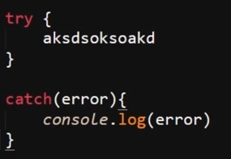
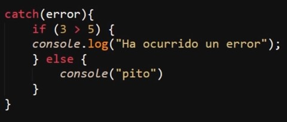
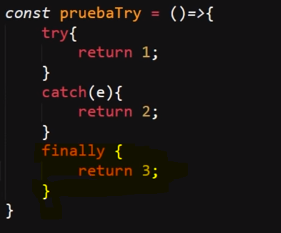
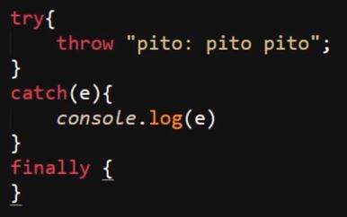
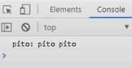
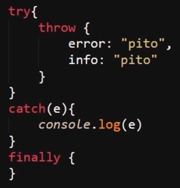
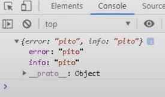
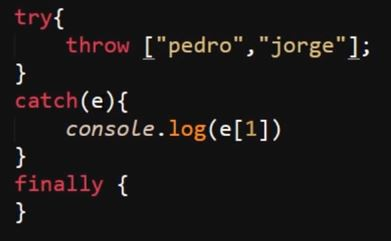
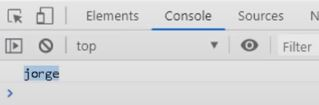

En JavaScript así como en cualquier otro lenguaje se pueden ocasionar multitud de errores al ejecutar un código, por lo tanto es un aspecto que el lenguaje está preparado para enfrentar, razón por lo cual existen lo que son "sentencias de manejo de excepciones", las cuales permiten notificar, documentar o definir errores de forma que estos sean de ayuda para el desarrollador, otros programadores e incluso los usuarios .
Excepciones
-
Estas consisten en el manejo de flujo de los errores, razón por la cual existen varios tipos de errores dentro del lenguaje, estos tipos son:
Todo lo referente a las excepciones ECMAScript se encuentra aquí: Objetos Fundamentales JS
A su vez todo lo referente a las excepciones DOMException se encuentra en: DOMException
Y por último todo lo referente a las excepciones DOMError está en: DOMError
Try...Catch
-
Se trata de un mecanismo para capturar los errores, y en función de esto definir los mensajes de estos así como ejecutar un bloque de código en consecuencia, es decir permite que se defina el qué hacer y cómo notificar sobre el error.
Para esto el mecanismo consta de dos partes, las cuales son "try" la cual contiene el código que se ejecutará, la cual retorna cualquier error que se origine en este, y "catch", la cual recibe el error originado en "try" y en respuesta ejecuta el código definido dentro de este.
Nota: En el "catch" se suele definir el valor dato receptor del error con nombres como "e" o "error" por temas de legibilidad.
Debido a esta dependencia para manejar el error es que ninguno de los elementos funcionará si no se encuentran los dos juntos.

De este modo se pueden generar mensajes o acciones de error personalizables las cuales permiten el definir el manejo de errores de un proyecto.
Es necesario tener en cuenta que "try catch" no funciona con errores de sintaxis, únicamente funciona para definir errores "esperados" que pudiesen suceder con alguno de los datos del código, del mismo modo al usar "try catch" salvo por los de sintaxis, el manejo de errores por defecto de JavaScript se desactiva al usar este recurso, esto para permitir que las implementaciones del desarrollador se lleven a cabo.
Por último es necesario tener en cuenta que existen dos tipos de "try catch", los cuales son el "catch" condicional e incondicional.
-
Condicional: Se trata de aquel "catch" que dentro de sí contiene condicionales para ejecutarse según sea el caso del error, es decir es un "catch" con estructuras "if", "else" o "else if" dentro de sí.

-
Incondicional: Simplemente se trata de aquel "catch" que únicamente posee una estructura de código dentro de sí, es decir es aquel "catch" que no posee ningún condicional dentro de este, como es el caso del primer ejemplo de "try catch".
Finally
-
Se trata de otra sección del "try catch", la cual se utiliza para incorporar un bloque de código que se ejecutará sin importar si se cumple el bloque "try" o el bloque "catch", en otras palabras sin importar si ocurre un error o no, este segmento del código se ejecutará de igual forma.
Por lo tanto el bloque "finally" tiene la jerarquía suficiente para ignorar elementos como el "return", los cuales detienen la ejecución del método, por ello aun después de un "return" el bloque de "finally" se ejecutará, sin importar el cómo se constituya el código de los bloques "try catch".

En el caso del ejemplo, el bloque "finally" sobreescribe el valor de la propiedad "return", por lo tanto la constante "prueba" retorna "3".
Sentencia Throw
-
Esta sentencia permite disparar un error de forma intencionada, literalmente al emplearlo se generará un error con el valor que se le especifique.
Código

Resultado

Esta sentencia funciona dentro o fuera de un "try catch" de igual forma, la diferencia radica en que al usarse dentro de un "try catch" este error puede ser manipulado.
A su vez el "throw" puede disparar otros tipos de elementos como por ejemplo objetos:
Código

Resultado

De ese modo se puede disparar cualquier tipo de dato con "throw" incluyendo arrays y objetos como se pudo apreciar, para lo cual se puede acceder a los valores o propiedades de la misma forma que se haría con normalidad:
Código

Resultado

Casos de uso del Try Catch
-
Este elemento realmente no es demasiado usado, esto se debe a que se recomienda que su implementación se reserve para las situaciones en las que realmente se esté obligado a trabajar con excepciones, las cuales en la mayoría de las ocasiones ocurren cuando surgen problemas que están fuera del control del desarrollador, por ejemplo los llamados a la base de datos, los cuales por motivos externos como la conexión del usuario pueden fallar.
No se recomienda el uso de "try catch" para tratar errores que sean generados por el código, a menos que se usen para alertar o notificar a otro programador o al usuario de un aspecto del error o de un suceso.